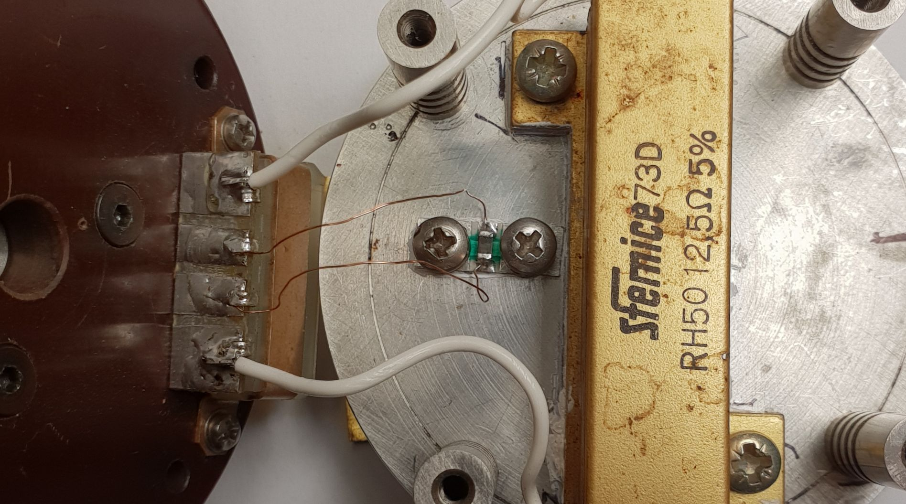

Heating stage
Introduction
Rationale
The wedge-bonding procedure requires the chip to be placed on a heated bed as it was anticipated in the project overview. The heated bed needs to be at a temperature of 150° for the wedge-bonding procedure to be performed efficiently and correctly.
The thermal model
It is well known that thermal systems can be modeled using electrical equivalents by following these rules:
- Heat current is equivalent to electrical current;
- Heat sources are equivalent to current generators;
- Temperature is equivalent to voltage;
- Ambient temperature is equivalent to electrical ground;
- Heat conduction of materials is equivalent to resistance;
- Heat capacity of materiasl is equivalent to electrical capacitance.
Heating stage details
We report in the image cluster below the machine's rebuilt heating stage.
- Top-left: the mounting support for the SMD NTC temperature sensor;
- Top-right: the NTC and its support mounted on the underside of the heated bed;
- Bottom-left: the disassembled heated bed;
- Bottom-right: the assembled heated bed.
